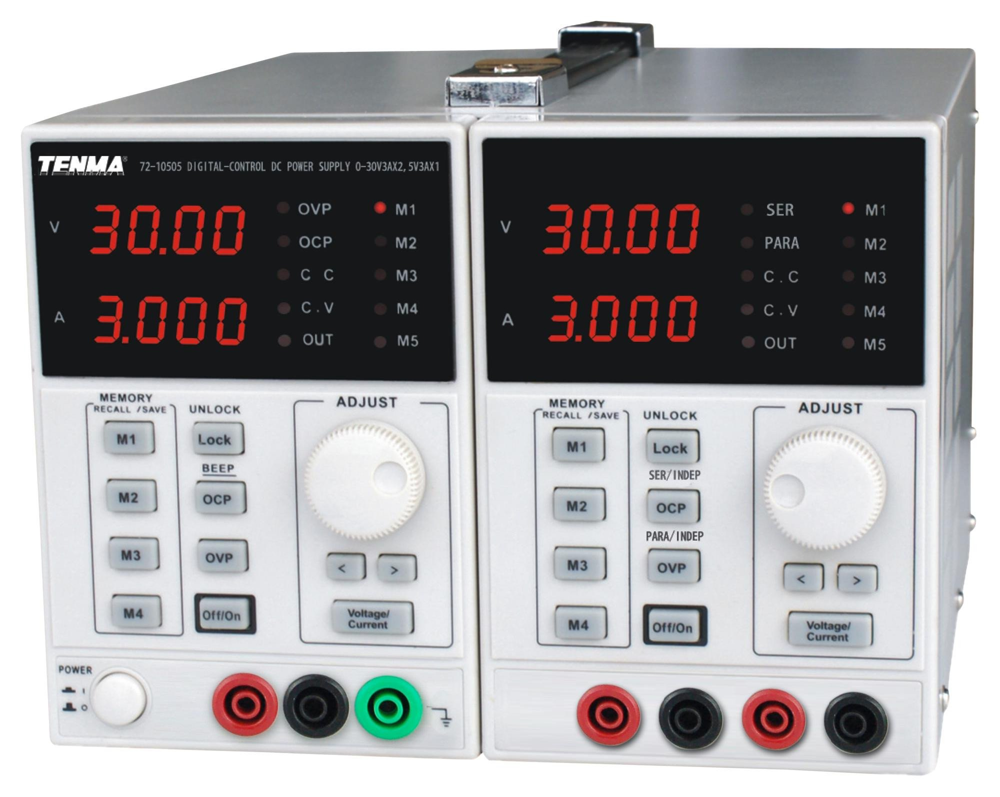

KA3005P
Command line tool to control power supplies created by Korad, Tenma, RS, Velleman, Stamos, (and other clones) via their serial interface.
Usage
Example (Getting Help):
> ka3005p -h
ka3005p 0.2.2
Controls a KA3005P bench power supply through its serial interface
USAGE:
ka3005p [OPTIONS] <SUBCOMMAND>
FLAGS:
-h, --help Prints help information
-V, --version Prints version information
OPTIONS:
-d, --device <device> Manually select power supply serial device
SUBCOMMANDS:
beep Enable/Disable Beep
current Set the current of the ouput or config
help Prints this message or the help of the given subcommand(s)
interactive Read commands from stdin and execute them
list list possible power supply devices
load Loads config settings of specified no
ocp Enable/Disable over current protection
ovp Enable/Disable over voltage protection
power Turns on or off the ouput of the power supply
save Saves current pannel settings to specified config
status Return status inforation about the power spply
voltage Set the voltage of the ouput or config
# Get the current status of the power supply. Note the power supply is automatically detected
> ka3005p status
Voltage: 12.00, Current: 0.304, Channel1: CV, Channel2: CV, Lock: Off, Beep: On, Output: On
> ka3005p power off
> ka3005p status
Voltage: 12.00, Current: 0.305, Channel1: CV, Channel2: CV, Lock: Off, Beep: On, Output: Off
> ka3005p voltage 12.1
> ka3005p status
Voltage: 12.10, Current: 0.303, Channel1: CV, Channel2: CV, Lock: Off, Beep: On, Output: Off
# If you need to manually specify the power supply e.g. If you have multiple plugged in
> ka3005p -d /dev/ttyUSB0 status
Voltage: 12.10, Current: 0.302, Channel1: CV, Channel2: CV, Lock: Off, Beep: On, Output: Off
Installation
- Grab the latest binaries from the Releases
- Run the binary!
- Optionally copy to your bin folder for system wide access
mv ka3005p-x86_64-unknown-linux-musl /usr/bin/ka3005p
Building
Building of the musl versions should be as simple as
git clone git@github.com:Nicoretti/ka3005p.git
cd ka3005p
cargo build --release --target x86_64-unknown-linux-musl
If you wish to build the gnu versions you will need to download the libudev dependency.
sudo apt install libudev-dev
Known working power supplies
If this tool works for you please add your device to this list:
- Korad KA3005P
- Tenma 72-2540
- RS PRO RS6005p
Interactive Mode
Using the interactive mode you can send continues stream of commands to the power supply. This can be used e.g. to apply an automated voltage ramp.
> python3 ramp.py -f 10 -t 20 -p 10 | ka3005p interactive
For more details check out the ramp.py script.
License
Licensed under either of
-
Apache License, Version 2.0 (LICENSE-APACHE or http://www.apache.org/licenses/LICENSE-2.0)
-
MIT license (LICENSE-MIT or http://opensource.org/licenses/MIT)
at your option.
Development
The following section provides information that developers may need for the project development and setup.
Prerequistes
Below are the necessary and optional tools required for project setup:
Required Tools
rustc: The Rust Compilercargo: Rust’s package managerjust: Convenient command runner for project-level tasks
Optional Tools
mdbook: A utility to create modern online books from Markdown filespython: Python programming language, useful for certain build or test scripts